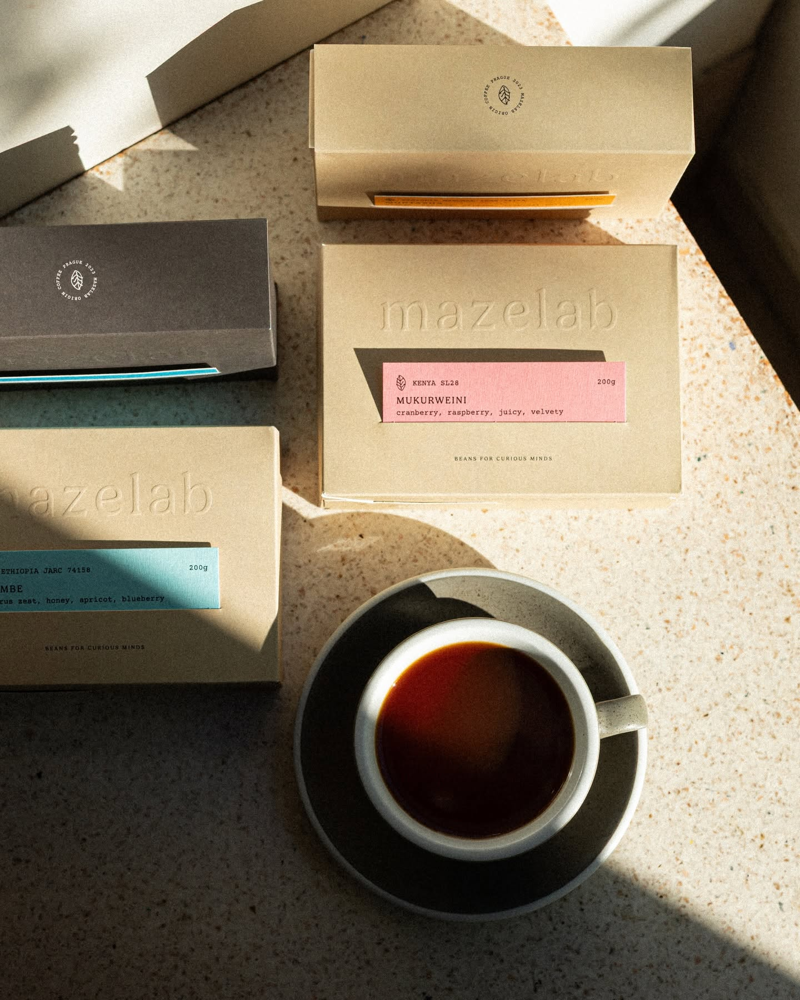

Les trois ateliers
-
01
Initiation aux
méthodes doucesV60, Chemex, Aeropress : trois façons de faire passer de l’eau à travers du café, trois résultats qui n’ont rien à voir. On regarde le matériel, on comprend ce que chaque pièce fait, puis on tire le même grain sur les trois pour entendre l’écart.
Ensuite on déplace un paramètre à la fois — la mouture, la température, le débit — et on regoûte. À la fin, vous savez quoi corriger quand votre tasse est amère, et quoi corriger quand elle est acide. C’est tout ce qu’il faut.
Durée [à fournir] Tarif [à fournir] Places [à fournir]

-
02
Analyse
sensorielle« Notes de fraise, de jasmin, de pamplemousse » : les étiquettes disent ça, et personne n’ose demander comment on les trouve. Cet atelier est fait pour ça. Reconnaître les arômes, séparer l’acidité du corps, et poser une note sur un café.
On goûte en série, à l’aveugle, et on met des mots dessus — les vôtres, pas ceux d’une fiche apprise. Vous repartez en sachant lire une étiquette et deviner, avant d’acheter, si le café qui est derrière est pour vous.
Durée [à fournir] Tarif [à fournir] Places [à fournir]

-
03
Latte
artLe dessin est la dernière étape et la moins décisive : tout se joue avant, dans le pichet. On apprend à faire mousser le lait jusqu’à la texture qui tient — brillante, sans grosse bulle — parce qu’un lait raté ne donnera jamais un cœur, quelle que soit la main.
Après quoi on verse. Le cœur d’abord, le reste vient avec le temps. Prévoyez de rater les premiers : c’est le programme.
Durée [à fournir] Tarif [à fournir] Places [à fournir]

S’inscrire Les ateliers Pas de formulaire
Écrivez-nous, on vous répond.
Il n’y a pas de formulaire sur ce site, et c’est volontaire : aucune donnée n’est collectée ici, rien n’est stocké quelque part. Pour réserver une place, il suffit d’un message — ou de le demander au comptoir la prochaine fois que vous passez.
Dites-nous quel atelier vous intéresse, combien vous êtes, et à quel moment vous êtes disponibles. On vous confirme la date et le tarif en retour.
- Par e-mail
- [à fournir]
- Par téléphone
- [à fournir]
- Sur place
- 38 rue Léon Jamin
Du mardi au samedi - @horizoncafe.nantes
Questions Les ateliers Avant de venir
Ce qu’on nous demande le plus souvent.
- Faut-il s’y connaître ? Non. L’atelier méthodes douces part de zéro : si vous buvez du café, vous avez le niveau requis.
- Faut-il apporter du matériel ? Non, tout est sur place. Si vous avez déjà une cafetière chez vous et qu’elle vous résiste, amenez-la : on travaillera dessus plutôt que sur la nôtre.
- On repart avec quelque chose ? [à confirmer par la maison] — préciser si un paquet de café ou une fiche de recette est inclus dans le tarif.
- C’est possible en privé ? [à confirmer par la maison] — préciser si les ateliers sont ouverts aux groupes privés et aux entreprises, et à quelles conditions.
- Et si je ne peux pas venir ? [à confirmer par la maison] — définir les conditions d’annulation et de report avant la mise en ligne. Voir LEGAL-TODO.md.
Note Les trois ateliers sont documentés par la presse locale nantaise. Leur durée, leur tarif, leur fréquence et leurs conditions d’annulation restent à confirmer par la maison avant la mise en ligne.